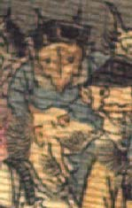

茶色い顔の鬼。黒い頭巾状のものをかぶり、その上に角のようなものが2本突き出ている。目は小さく、黒目のみで、耳は目よりも上についており、尖っている。顔は逆三角形で、狐を思わせる。青い着物を身にまとっている。
著作者：J.Dautremer／出典：親書誌：U426_nichibunken_0123：Le vieillard et les démons／日付：2006／資源識別子：U426_nichibunken_0123_0002_0015
Copyright (c)2010- International Research Center for Japanese Studies, Kyoto, Japan. All rights reserved.